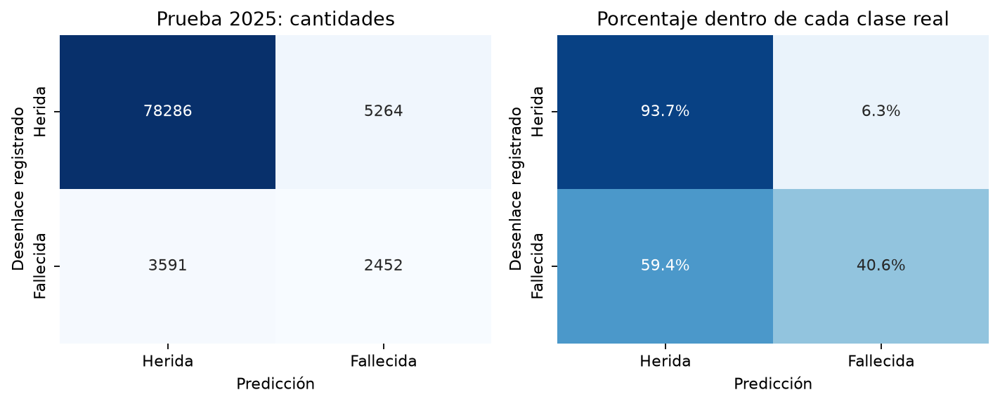
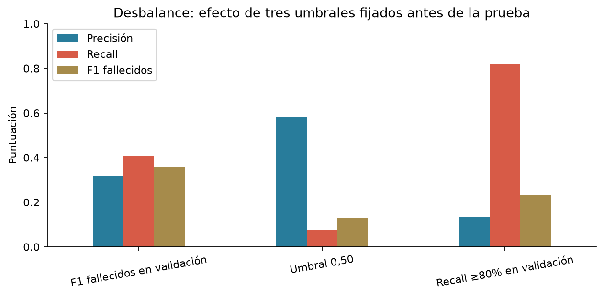

Proyecto Integrador · 31/10/2026 · Alan Alcaraz, Leandro Ferreira y Jorge Rios
Más información real mejora la clasificación, con límites importantes
PRF Brasil, 2017–2025: 754.098 víctimas heridas o fallecidas. Se usaron 24 características y se reservaron 89.593 víctimas de 2025 para prueba.
Resultado: AUC 0,806 y F1 macro 0,651, frente a 0,619 y 0,512 usando solo sexo y edad en el mismo Brasil. El modelo principal detecta 40,58% de los fallecidos, con precisión de 31,78%. El año de prueba no se usó para elegirlo.
Las tres fases
Prueba final: fallecidos como clase positiva
| Modelo | AP | AUC ROC | Precisión | Recall | F1 macro |
|---|
| LightGBM | 0.302 | 0.806 | 31.8% | 40.6% | 0.651 |
| Logistica | 0.285 | 0.801 | 27.7% | 46.6% | 0.641 |
| Arbol | 0.276 | 0.779 | 27.9% | 42.5% | 0.638 |
| Bayes | 0.240 | 0.775 | 27.1% | 34.6% | 0.623 |
| LightGBM_sexo_edad | 0.104 | 0.619 | 10.8% | 35.2% | 0.512 |
| Logistica_sexo_edad | 0.104 | 0.620 | 10.9% | 34.8% | 0.514 |
| Dummy | 0.067 | 0.500 | 0.0% | 0.0% | 0.483 |
AP no es porcentaje de aciertos. Siempre herido alcanza 93,26% de exactitud y detecta cero fallecidos. Los umbrales se fijaron con validación de 2024; el punto de recall alto no es una política clínica aprobada.

Qué hacer con el desbalance
Comparamos pesos en entrenamiento, calibramos por separado y ajustamos el umbral conservando prevalencia real en prueba. El punto de mayor detección encuentra 81,98% de fallecidos, pero precisión baja a 13,51% y genera 31.721 falsas alarmas. No hay una única métrica que resuelva ese costo.

Material para revisar y defender
El recall principal de Brasil (40,58%) es menor que el 45,41% del proyecto anterior de Paraguay: no mejoraron todos los indicadores. País, población y prevalencia cambian; la comparación de sexo/edad y modelo completo dentro de Brasil es más justa. Material de apoyo con IA que el equipo debe comprender, revisar y adoptar antes de entregar. Legajos pendientes.